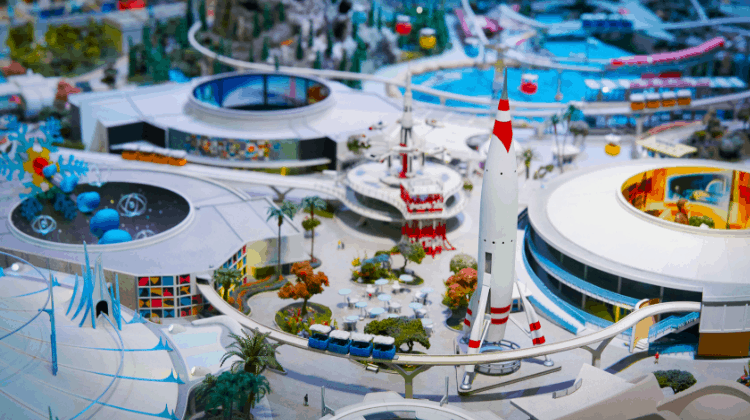
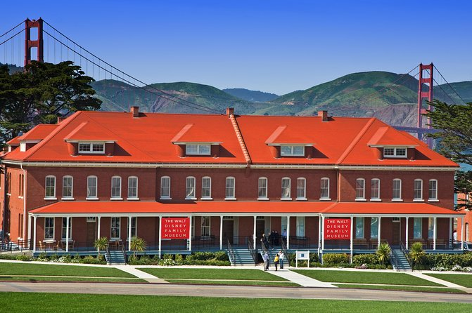
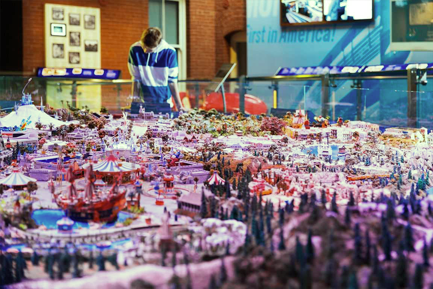
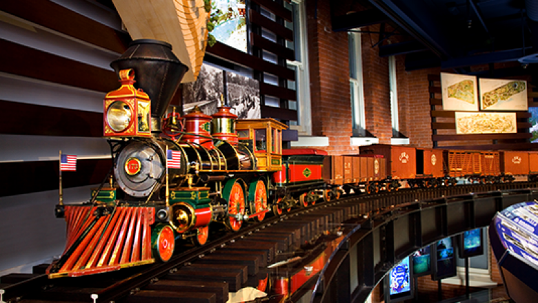

The Walt Disney Family Museum (WDFM) is an American museum that features the life and legacy of Walt Disney. The museum is located in The Presidio of San Francisco, part of the Golden Gate National Recreation Area in San Francisco. The museum retrofitted and expanded three existing historic buildings on the Presidio's Main Post.[1] The principal building, at 104 Montgomery Street, faces the Parade Ground, and opened on October 1, 2009. Additional museum offices, the offices of the Walt Disney Family Foundation, and rotating major exhibitions are housed in the Diane Disney Miller Exhibition Hall at 122 Riley Avenue.[2][3]
The Walt Disney Family Museum is a 501(c)(3) non-profit organization that was formally owned, operated and funded by the Walt Disney Family Foundation, a non-profit organization established by Disney's heirs including Diane Disney Miller, Disney's daughter and founder of the museum.
The museum is not formally associated with and is entirely independent of The Walt Disney Company, the media and entertainment conglomerate. However, the museum has often cooperated with various company units to either borrow various items in the company's custody or to create authorized reproductions of such items to put on display—including the Walt Disney Archives, Walt Disney Animation Studios' Animation Research Library, and Walt Disney Imagineering

Randy Malamud of the Chronicle of Higher Education wrote, "It's a collection of ideas and documents, a diverse array of archival, filmic, and pop-cultural texts that historicizes Disney's work and compels us to think twice about how we appraise it. The museum energizes the fascinatingly charged scholarly debate that the Disney phenomenon has provoked, shaking the worn, staid, sometimes cynical images we have of Disney and his empire, bringing to them renewed color and motion.

Edward Rothstein of The New York Times wrote, "Given the heritage of the place, you expect to see a ride at the Walt Disney Family Museum . . . And in a way, there is one, since the museum does just what Disney thought a ride should do when he created Disneyland more than half a century ago: it tells a story. And while the museum is almost leisurely in relating its narrative, only here and there veering into uncharted terrain, and while children will quickly pass by many sections that will fascinate their elders, there are more than enough thrills for everyone.

According to Diane Disney Miller's son, Walter E.D. Miller, the founding of the museum was the culmination of over a decade of various efforts by his mother to honor her father and his legacy. She worked on the documentary Walt: The Man Behind the Myth (2001) and the Walt Disney Concert Hall. Along the way, she was frequently advised by many people to write a book, but finally settled on the idea that an interactive museum space would be the best way to tell her father's story. She considered various sites, including Griffith Park, and selected the Presidio after learning that some of its old buildings were available for lease.

The 40,000 square foot space in the main museum building features the newest technology and historic materials and artifacts to bring Disney's achievements to life, with interactive galleries that include early drawings and animation, movies, music, listening stations, and a 12-foot diameter model of Disneyland.
The lobby displays 248 awards that Disney won during his career, including the Presidential Medal of Freedom and many Academy Awards—including the honorary award for Snow White and the Seven Dwarfs, which consists of one full-sized Oscar alongside seven miniature ones (representing the Seven Dwarfs).